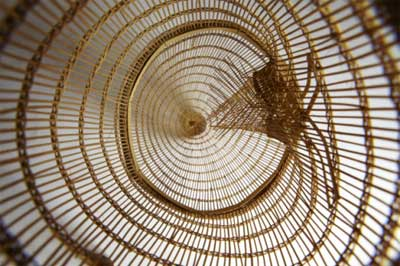
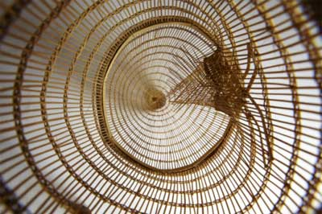

Education / Portal
Welcome to the Education Portal for the Sainsbury Centre for Visual Arts. Each of the links below leads to a learning resource, project website or research initiative relating to different aspects of our work. Here you will find a whole range of different approaches to working between objects and people.
At the Sainsbury Centre, we run learning, research and creative programmes with and for people of all ages. Our work is led by the diversity of the Collections from around the world, their range in date and culture from 4000 BCE to the present, and the rich and sometimes challenging themes from temporary exhibitions. The University of East Anglia sets all of our endeavours within a strong culture of interdisciplinarity and excellence. The development of World Art studies at UEA is represented by the Journal World Art, published by Taylor and Francis.
Art as a Window on the World » The Building » Art and Biodiversity programme » Art and the Sea programme » Artworld teaching resources » Basketry exhibition resources »
Changing Landscapes exhibition »
Basketry exhibition resources »
Changing Landscapes exhibition » Culture of the Countryside project »
Flickr — workshop images »
Intercultural dialogues programme »
Living with Me project »
Masterpieces exhibition resources »
Pinterest — picture resources »
Schools' Masterpieces Showcase »
Twitter — education commentary »
WikiGuides — login required »
Culture of the Countryside project »
Flickr — workshop images »
Intercultural dialogues programme »
Living with Me project »
Masterpieces exhibition resources »
Pinterest — picture resources »
Schools' Masterpieces Showcase »
Twitter — education commentary »
WikiGuides — login required »  World Art Journal »
World Art Journal »